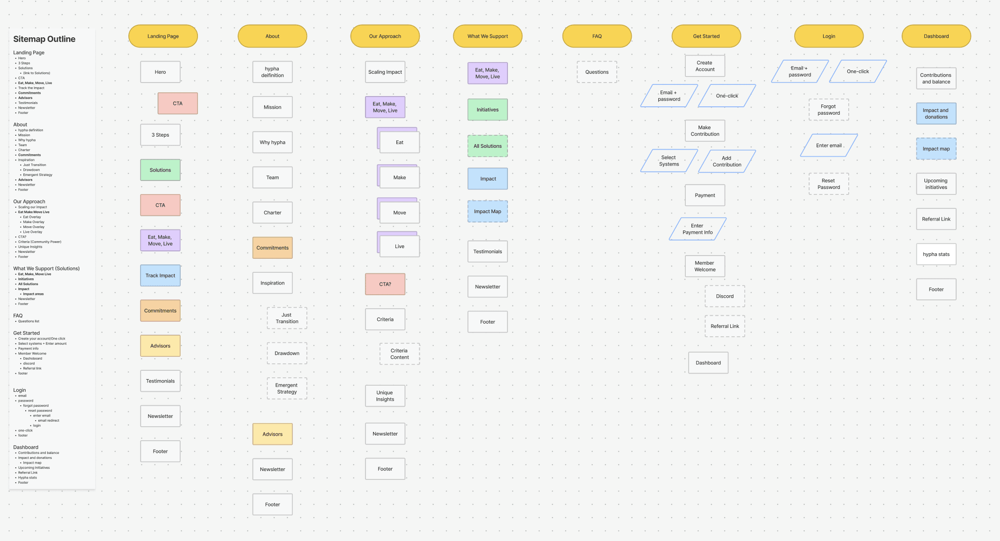

Hypha · 2022–24 · Head of Product
A climate-funding platform that doubled conversion.
Hypha makes funding regenerative climate impact clear and trustworthy for everyday contributors. As Head of Product I led the 0→1 lifecycle — strategy, team, research, and design — translating complex regenerative funding models into intuitive flows.

Translating climate systems into a web experience
I shaped a brand that nixes climate doom and connects contributors to the real-world impact of their giving. UX flows clearly explained where funds go, how initiatives are vetted, and why ongoing support matters. Comparative analysis, user research, and early testing produced a contributor-centric experience built on transparency, trust, and emotional clarity — and usability testing drove a restructuring of the core contribution flows.

Strategic vision and roadmap, owned end-to-end
Working with the executive team, I defined the 0→1 product vision and roadmap, aligning platform development with regenerative economic principles. I hired and led the cross-functional team — product managers, designers, engineers — on agile cycles, prioritizing features by impact, feasibility, and mission alignment.

Results
- 2× conversion on the core funding flow
- +40% user trust in pilot testing
- Hired and led the cross-functional team that launched a polished, scalable platform
- Unified voice, design, and functionality across the product
Hypha turns the opaque world of climate impact into something clear, actionable, and empowering — a platform that mobilizes collective action.